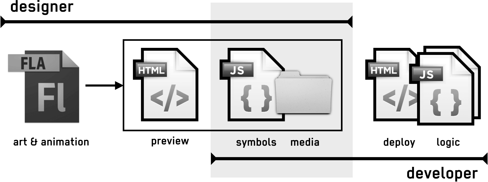

HTML5 Banner Ads With CreateJS
Preamble
This is a living document. It will be updated as standards and best practices evolve. See Appendix: Document History for a list of changes. The source, along with supporting materials, examples, and helper classes is available at github.com/createjs/html5ads/, and contributions are welcome.
The content of this document is copyrighted, and is licensed under the Creative Commons Attribution license.
Introduction
The online advertising industry has been subject to numerous disruptive changes recently. Traditionally, most ads were built with Flash Pro and dependent on the Flash plugin. The rise of mobile browsing on platforms that do not support plugins has provided an increasingly compelling reason to find alternative workflows, but Google's recent move to block Flash ads in Chrome, and Amazon no longer accepting these ads make finding new solutions imperative.
This article explores how the CreateJS suite of libraries allows ad creators to transition easily to HTML5/JS, examines how the libraries fit into emerging IAB (Interactive Advertising Bureau) standards, and provides guidance for creators making the transition. Workflows using the new HTML5 Canvas publish target for Flash Pro will also be discussed, including how it boosts productivity and allows ad creators to leverage prior experience or even convert existing ads.
Appendixes provide more in-depth information on technical topics.
Authors
This document was authored by:
Grant Skinner, CEO gskinner, inc.
Grant and his team at gskinner conceptualize, design, and build world-class interactive experiences for smart clients such as Microsoft, Google, Mozilla, and EA. He has spoken at hundreds of events on five continents about interactive design and development. He heads the development of CreateJS, and partnered closely with Adobe to lead the development of the HTML5 Canvas publishing for Flash Professional.
Cory Hudson, Sr. Director, Creative Technology, AOL
Cory leads a large team of interactive designers and front-end developers who are entirely focused on building feature-rich, cross-screen advertising experiences. His team is directly responsible for developing highly engaging creative solutions and driving technical R&D initiatives in order to effectively evaluate and leverage emerging technologies within AOL's digital advertising formats and platforms. Cory also serves as Chair of the IAB's HTML5 Working Group, where he leads an industry-wide group of experts who are collaboratively working to establish standardized best practices and guidelines for HTML5 based digital advertising.
Emerging IAB Standards
The Interactive Advertising Bureau (IAB) recognizes that the industry's long established digital advertising specs tailored to the SWF file format are no longer viable for HTML5-based advertising. With HTML5 there is no longer a convenient dependency upon a single, optimized creative asset package, but rather a compilation of separate assets that must be created, optimized, measured and evaluated individually, while collectively adhering to standardized specs.
This introduces several new obstacles that must be adequately accounted for in order to successfully deliver a compliant advertising experience. The challenges that HTML5 faces when compared to Flash are mainly the required overall file size and number of HTTP server requests associated with an ad unit.
File Size
Client bandwidth has increased significantly since the 40kB file size limitation was first introduced. Additionally, the realities of building HTML5-based ad units make it more challenging to adhere to this limit.
Based on these factors, a desire to enable richer ad experiences, and in accordance with the results of recent IAB sponsored industry-wide performance testing, the IAB is proposing an increase in the file size standard for most HTML5 ad formats to 200kB.
Because most ad networks and browsers automatically gzip files crossing the network, file size will be calculated by combining the total gzipped, wire-weights of all utilized assets that are initially required in order for the ad to display in a local, standalone environment. This includes all local images, CSS, JS, HTML, etc.
Shared Libraries Exception
The sole exception to the file-size policy is CDN hosted JavaScript libraries that are granted an exception by the publisher or ad server, because these common libraries are leveraged across multiple campaigns and can be cached by users' browsers. A number of ad networks are already supporting this exception for CreateJS (ex. CoFactor/Pointroll, AOL).
CreateJS is on a shortlist of suitable libraries (widely used and distributed, professionally maintained, well documented, frequently updated, backwards compatible) that the IAB will publicly recommend through its soon-to-be-updated and republished HTML5 Best Practices documentation, located at http://www.iab.net/html5. This would ultimately allow ad creators to exclude the file size of the library from the overall 200kB file size calculation.
CreateJS
Developed by widely-recognized interactive shop gskinner to facilitate the creation of Flash-like experiences using open web standards (ex. HTML5), CreateJS is a suite of four libraries that accelerate the production of rich interactive experiences such as games, ads, data visualizations, and micro-sites.
The four libraries in the suite can be used together or completely independently, and are focused on specific areas of functionality.
EaselJS
High performance 2D graphics and interaction, with a Flash-inspired display list and feature-rich API.
SoundJS
Audio playback and management, with transparent support for WebAudio, Audio elements, and optional Flash plugin fallback.
PreloadJS
Robust asset loading and management, with granular progress reports, and nested dependencies.
TweenJS
Simple but powerful animation engine with multi-step tweens, synced tweens, non-numeric property support, and motion paths.
CreateJS has no external dependencies, imposes no specific architectural requirements on your code, and is designed to work seamlessly with almost every other JS library, including favorites like GSAP (aka TweenLite), Three.js, AngularJS, and jQuery.
It is free and open source, licensed under the permissive MIT license. This means it can be easily incorporated into commercial projects, and the project welcomes contributions and feedback from the community.
CreateJS is robust and mature. The suite was created and is maintained by a highly experienced team of interactive developers and designers, who have been building rich content for over 15 years using Flash and HTML5. It is over 5 years old, has grown through 8 major releases, and has been sponsored by Adobe, Microsoft, Mozilla, and AOL. CreateJS is used by tens of thousands of developers, with over one third of FWA Site of the Day winners using it, and content built with CreateJS is viewed by hundreds of millions of users every day.
Flash Professional: HTML5 Canvas
Great experiences require both code and design. While it's entirely possible to code amazing content with CreateJS, Flash Pro CC empowers designers to engage fully, and boosts productivity by accelerating the creation of art and animation.
With Flash Pro, you can create an "HTML5 Canvas" document, which will be output as human-readable JavaScript code leveraging the CreateJS libraries when published.
As is the case for traditional Flash development, it is possible to create interactive banners entirely in Flash with timeline scripting. For more complex projects though, you may realize considerable benefits from using Flash Pro to prepare an asset library of art and animation, then write business logic in your code editor of choice that utilizes those assets.
This approach provides a clear delineation of roles and asset ownership between developer and designer. Designers own the FLA, and hand off the published assets to a developer, who can integrate them into a larger project, and manage them via version control. The designer never has to worry about the code, and the developer never has to open the FLA or modify the published assets.
See "Appendix: Designer / Developer Workflow" for more information on this topic.
Considerations
While CreateJS and Flash Pro provide a highly productive workflow, and allow you to leverage prior experience with Flash, there are important considerations to keep in mind when getting started.
Code & API Differences
CreateJS content is developed using JavaScript, which is very similar to ActionScript, however there are some notable differences that you should be aware of when converting common functionality within Flash Pro CC.
The most immediate difference is scope, which must be defined explicitly. For example, on the timeline, rather than calling stop(), you must use this.stop().
While the CreateJS API will be very familiar to ActionScript developers, there are significant differences. As examples, only Container and MovieClip can have child objects, and only Shape can draw vector graphics. Timelines are zero based: this.gotoAndStop(0) will take you to the first frame.
More detail on this topic can be found in "Appendix: Code & API Differences".
Browser Compatibility
CreateJS is reliably supported by all modern browsers. The only unsupported browser with notable market share is IE8 (<2% market share and dropping) due to its lack of Canvas or Audio support. We recommend providing a fallback static image with a link for unsupported browsers. This can be done with code similar to the following, which prevents the fallback image from loading unless it is needed.
<canvas><script>
if (!window.CanvasRenderingContext2D) {
document.write("<a href='url'><img src='image.jpg' alt='text'></a>");
}
</script></canvas>
The CreateJS AdHelper class described in "Appendix: AdHelper" simplifies setting up fallback content, and makes the code above unnecessary.
Load Optimization
There are a number of strategies and techniques you can employ to reduce the size of the assets used in your ad and ensure it adheres to the 200kB limit specified by the IAB. Minimizing the number of HTTP requests required to display your ad is also important to decrease load times.
Reducing HTTP Requests
Recent IAB-sponsored performance testing has indicated that the number of HTTP requests can have a significant impact on the perceived loading performance of the visual ad unit, especially on mobile devices. Minimizing the number of requests allows the browser to optimize and parallelize loads, and reduces the overall time cost for establishing http connections.
The emerging HTTP2 standard will mitigate this concern by allowing browsers and servers to transfer multiple assets over a single connection.
Ideally, the number of initial HTTP requests should be kept below 8. This would include all creative assets, CDN hosted and cached support files, and necessary 3rd party impression or click tracking calls.
Using sprite sheets, code minification / concatenation, and data URIs (for embedded web fonts or SVGs) can all help reduce HTTP connections.
CreateJS's PreloadJS library provides capabilities for loading assets, including progress events, maintaining dependencies, loading subsequent assets on interaction, and specifying a maximum number of parallel http connections (via queue.maxConnections). EaselJS supports sprite sheets and audio sprites, and Flash Pro allows for the automatic creation of sprite sheets during publishing.
Graphics
The bulk of file size for most ads is in graphical assets. There are a number of techniques you can use to reduce this cost.
Vector Graphics
Vector graphics represent art as a collection of resolution-independent drawing commands. They are especially suited to illustrations and other non-photographic art. Unlike bitmap images, they can be scaled indefinitely and retain full fidelity, which makes them ideal for responsive designs targeting multiple display sizes or densities. When used with appropriate content, vectors can also be much smaller than the equivalent bitmap image.
The primary disadvantage to using vectors is that rendering performance scales directly with the complexity (ex. number of curves and points) in the graphic. This is especially true on mobile devices where CPUs are slower and less powerful.
Coding vector graphics manually is possible, but not pragmatic. Luckily, there are several tools that can make working with vector graphics very intuitive. You can create graphics within Flash Pro, or use other software programs such as Adobe Illustrator and then import the result directly into Flash Pro.
See "Bitmap Caching" below for a technique to reduce the ongoing cost of drawing complex vector graphics.
Bitmaps
Bitmaps graphics define the color of every pixel in an image. It is very inexpensive for the GPU to manipulate bitmap images, so leveraging bitmaps within your animations rather than vectors can often provide tremendous performance gains.
Bitmaps are ideal for photographic images as well as imagery that requires soft-edges and transparency. Using vectors for these types of graphics would require a gratuitous amount of complexity to represent the image detail, resulting in increased file size as well as visual results that don't appear as natural.
The main disadvantages to using bitmaps is that they come at the expense of increased memory overhead and lack of scalability when compared to vectors. Bitmaps can consume a great deal of both RAM and graphics memory and overuse can cause performance problems on mobile devices. This is especially true with the need to support high DPI screens, which can require you to double the size of images, effectively quadrupling their memory footprint.
Bitmap Caching
Similar to Flash Player, EaselJS supports bitmap caching, which allows you to pre-render complex graphics to an off-screen bitmap, so it does not have to be rendered each frame. This can provide significant performance benefits when used appropriately with static art.
The rules for using bitmap caching are similar to using it with Flash Player: use it only on static content, and only when the complexity of the graphics are sufficient to warrant its use. This is because bitmap caching creates new bitmaps, which use both RAM and graphics memory. The latter is limited on mobile devices and overuse can cause performance problems.
Bitmap caching can be applied from within Flash Pro via the "cache as bitmap" option, or with code using the cache() method of display objects.
High DPI Screen Support
In order to ensure that bitmaps are displayed crisply on high DPI screens, they should be created at double the display size and then scaled down accordingly within Flash Pro. For example an image that is intended to display at 300x250, should actually be created at 600x500 and then scaled down to 300x250 within Flash Pro. Alternatively, you could author your FLA at double resolution, and scale it to the appropriate size at runtime.
This should be approached in a strategic manner in order to avoid the unnecessary bloating of the overall file size associated with your image assets. You can sometimes avoid having to double the dimensions of photographic images that are not the focal point of the ad experience (e.g. photographic background image).
Conversely, photographic imagery that is the focal point of the ad experience or graphical elements that have sharp, crisp edges such as logos, line artwork and text will most likely always need to be doubled in dimensions because the difference in visual quality is very apparent and noticeable.
Testing your ad on high DPI devices will allow you to determine which graphics will need to be double-sized or not. With experience you will be able to identify these scenarios readily.
The CreateJS AdHelper class described in "Appendix: AdHelper" makes it easier to work with high DPI screens, including support for content authored at double scale.
Compression
Unfortunately, Flash Pro's default bitmap compression is not very aggressive. You should leverage other image optimization tools such as ImageOptim or ImageAlpha to more fully compress your images. In some cases, these tools can reduce image size by 50-75% without any visible loss in quality. These tools can also be integrated into automated build processes.
Sprite Sheets
Sprite sheets combine multiple images or frames of animation onto one larger image, and can dramatically reduce your overall file size and number of server requests.
It is suggested that you combine similar images into sprite sheets, a single JPG sprite sheet for photographic images with opaque backgrounds and another separate PNG sprite sheet for crisp graphics and imagery that requires transparency. There should generally be no need for more than 2 sprite sheets.
You can create sprite sheets manually in Photoshop or using standalone tools such as Zoë or TexturePacker. However the easiest way to create sprite sheets when creating ads with Flash Pro is to use its built-in features:
- Generate Sprite Sheet. Available via the Flash Pro library panel and requires manual placement and masking for each displayed image.
- Export All Bitmaps As Sprite Sheets. Available via the Flash Pro publish settings which automatically handles sprite sheet creation for you however currently outputs a single sprite sheet for all asset types. "Appendix: Code & API Differences" has additional information on leveraging this new feature.
Audio
When used, audio can also contribute significantly to file size. As with images, you should consider compressing your audio using a dedicated tool that will provide better results than Flash Pro. This is particularly true because as of the time of writing, Flash Pro does not compress audio below 128kbps.
When compressing play, with settings and get a feel for what provides adequate quality for your needs. For example, you might be able to use 48kbps mono for voice or some sound effects, but may not want to drop below 128 kbps for music.
Code
Traveling over the wire, your code will be gzipped, which will vastly reduce its file size automatically. However, you can further decrease the file size via minification, and reduce the number of HTTP requests via concatenation.
Concatenation involves combining multiple source files into a single file. Ideally, all of your source files (HTML, CSS, JS) are combined into a single HTML file prior to deployment.
Minification is the process of removing all unnecessary characters from the source code, such as whitespace and comments. More aggressive minification will also refactor your code to use shorter variable names and more compact syntax.
These processes make your code vastly harder to work with, and as such should be used to build a copy of the code for deployment. They are easily integrated into an automated build process using Grunt or Gulp. The functionality of the code should remain intact, but it's important to always test after concatenation and minification.
Performance
Building your ads with performance in mind is critical, especially when they will be viewed on mobile devices. Not only do you want your ads to play back smoothly, but you also want to be respectful of users' experience of the site they are visiting, and the battery life of their device.
There are a number of factors that can have a significant impact on the performance of CreateJS content. It's good to be aware of them, and avoid or use them sparingly.
- drop shadows and glows can be expensive to render, especially on mobile devices
- filters are very performance intensive, and it is recommended to consider alternatives to animating them directly. For example, rather than animate a ColorMatrixFilter to fade a Bitmap from grayscale to color, consider desaturating a copy of the Bitmap by applying the filter once, and fade it over top of the colored version. Similar approaches can be used for blurs and color transforms (which are filters in EaselJS).
- complex vector graphics with lots of curves or points (or large numbers of simpler vectors graphics). Consider using bitmap caching to pre-render complex vectors.
- large or complex gradients (especially circular gradients).
- vector masks are costly in some browsers, consider using
compositeOperationin combination with bitmap caching to attain similar results.
You should always profile your content's performance using browser developer tools prior to deployment. Be sure to consider the relative performance of the device you use to profile versus the devices your users may be using. Testing on actual devices is always ideal when possible.
Performance monitoring
Some devices are just slow. It doesn't matter how well you author your ad, it will likely never run well on a 5 year old phone intended for a third-world market. Given that, it's a good idea to monitor the performance of your ad, and fall back to alternate content (ex. an image) if it's performing poorly.
The EaselJS Ticker can help with this via its getMeasuredFPS() and getMeasuredTickTime() methods. The former returns the actual framerate that the Ticker is running at, and the latter reports the time actually spent executing each tick. For example, if an ad that was authored to play at 20fps reported 19.8fps, that would mean it's playing right around where we'd expect. However, if it was using 48ms each tick on a desktop PC, that would indicate that it was using almost all of the time available per frame (48ms of 50ms), which could lead to problems when running on less powerful devices.
The CreateJS AdHelper class described in "Appendix: AdHelper" provides a configurable method for monitoring performance and showing fallback content or providing actionable events. It also correctly avoids false positives when running in a background tab.
Duration
Ads are often required to run for a set amount of time before sleeping (pausing). It's reasonably easy to set a timer to do this in JavaScript, however it's important to consider the elastic nature of frame timing in EaselJS.
When you set a framerate, this doesn't guarantee that your content will play back at that speed. If the device becomes overburdened, frames may take longer to render, slowing the playback of your content. This can cause problems when your ad fails to reach the expected keyframe in the allotted time.
EaselJS allows you to set a target framerate on MovieClip and Sprite instances, placing them in a time-synced mode. If the real-world framerate drops, the MovieClip will adjust its playback rate to accommodate it. For example, if you set a target framerate of 20 on a MovieClip, and the real-world framerate drops to 10fps, it will play 2 frames per second to remain synchronized.
myMovieClip.framerate = 20;
Note that the timing may still vary slightly, but this is easily resolved by shortening your animation by a small amount. For example, if you have a 15s maximum duration, you may want to author your ad to be 14.8s long to ensure it reaches the last frame before sleeping.
The CreateJS AdHelper class described in "Appendix: AdHelper" provides tools for scheduling sleep and wake for ads, as well as propagating a target framerate to all MovieClip instances in the display list.
Summary
Authoring ads using CreateJS and Flash Pro allows you to leverage your existing skills and workflows to develop rich interactive content built on open web standards, that can play on any device, and adhere fully to the emerging IAB standards.
There are a number of differences from SWF and AS3 production, and as with any new platform, it will take a bit of adjustment to fully develop your expertise. However, a lot of effort has been put into both CreateJS and Flash Pro's HTML5 Canvas publishing to make it comfortable and familiar to developers coming from a SWF background.
To get started, check out the demos and documentation on the CreateJS site or download the latest source and examples from the CreateJS GitHub repo. Then, install the latest version of Flash Professional, and check out the AdHelper example.
Appendix: Links
HTML5 Ads
- http://www.iab.net/html5 IAB HTML5 specs
- http://github.com/createjs/html5ads/ Repository for this document, supporting materials, and helper classes.
CreateJS
- http://createjs.com/ CreateJS site
- http://github.com/createjs/ CreateJS GitHub rep
- http://createjs.com/docs/ CreateJS API documentation
- http://createjs.com/demos/easeljs/ CreateJS demos
You can access tutorials and examples for each CreateJS library by cloning its GitHub repository (or simply downloading the latest as a zip file), and looking in the /tutorials and /examples directories.
Tools
- http://www.adobe.com/products/flash.html Flash Professional
- http://www.createjs.com/zoe Zoë
- https://www.codeandweb.com/texturepacker TexturePacker
- https://imageoptim.com ImageOptim
- http://pngmini.com ImageAlpha
JavaScript / Web
- https://developer.mozilla.org/docs/Web/ MDN HTML & JS reference
- http://caniuse.com/ Browser feature support reference
- https://dev.modern.ie/platform/documentation/f12-devtools-guide/performance/ Performance profiling in MS Edge
- https://developer.mozilla.org/en-US/docs/Tools/Performance Performance profiling in Firefox
- https://developer.chrome.com/devtools/docs/timeline Performance profiling in Chrome
Appendix: AdHelper
AdHelper is a helper class that makes it easier to build and deploy ads using CreateJS. It serves a number of functions, and is very easy to set up.
var ad = new createjs.AdHelper(myStage);
AdHelper can be found in the CreateJS Sandbox repository on GitHub:
http://github.com/createjs/sandbox/
Method Chaining
Most methods can be chained for simpler setup. For example, the following code creates a new AdHelper instance and enables time sync, performance monitoring, and high dpi support using default settings.
new createjs.AdHelper(myStage).timeSync().watchFPS().highDPI();
Sleep / Wake
Puts the ad to sleep according to a configurable schedule, and wakes it for the specified amount of time when the mouse is within the ad, or the user clicks in the ad. When an ad is put to sleep, its Ticker is paused, its tick listener is unsubscribed, any GreenSock tweens are paused, and a sleep event is dispatched to allow custom handling. On wake, this is reversed, and a wake event is generated.
ad.setSleep(start, mousedown, inBounds, useTicks, listener);
Ads can also be put to sleep directly via the "sleep" and wake" methods:
ad.wake(time); ad.sleep(delay);
Visibility
Detects when the ad is not visible (ex. in a background browser tab), and sleeps the ad and mutes all sound. Resumes / unmutes the ad when it is visible. The "hidden" property is set accordingly and the sleep and wake events are dispatched as normal.
This feature is enabled automatically when using AdHelper.
CreateJS Support
Test to see if CreateJS is supported on the current browser. For example, this can be used to display alternative content.
if (!createjs.AdHelper.isSupported()) {
createjs.AdHelper.showAltImage(myCanvas, "myImage.jpg", "url");
}
Alternative Content
Static methods to replace your ad canvas with alternative content. This can be useful when CreateJS is not supported, or if performance monitoring determines the ad is running too slowly. There are three methods, that give different levels of control.
createjs.AdHelper.showAltImage(canvas, imgSrc, href, alt, target); createjs.AdHelper.showAltHTML(canvas, html); createjs.AdHelper.showAlt(canvas, element);
Time Sync
Force all MovieClips in the ad to operate in time-synced mode (ie. by setting framerate on all MovieClip instances). This allows the ad to play back with a predictable duration even if the real framerate fluctuates.
ad.timeSync(framerate);
High DPI Support
Enable full resolution rendering on high DPI screens. Can also be used to disable full resolution rendering on high DPI screens to improve performance. Also allows for authoring the ad at a different scale.
ad.highDPI(enabled, nominalScale);
Performance Monitoring
Monitors playback framerate, and uses a simple heuristic to determine when the ad fails to satisfy configurable performance minimums. Dispatches a slow event and sleeps the ad by default. Works with visibility features to avoid failing while in a background tab due to throttling.
ad.watchFPS(minFPS, tolerance);
Appendix: Designer / Developer Workflow
As with traditional SWF development, there are many valid workflows for developing HTML5 Canvas content using Flash Pro.
For simpler projects owned by a single designer, building everything on the timeline, including simple frame scripts is often perfectly acceptable.
As projects grow in complexity, it is generally wise to create a separation between the creation of visual assets (presentation), and the code that drives functionality (logic). In many cases these areas are divided between a designer(s) and developer(s) respectively. Even when a single creator is producing the full project there are usually significant benefits to productivity, quality control, reuse, and robustness that can be realized by separating presentation and logic.
One common approach to this separation when building CreateJS content is to have the FLA owned entirely by the designer, who passes the published JS library to the developer (via email, version control, etc), who consumes it into a larger project with additional HTML and JS files. It winds up looking something like this:
Using this approach, the developer should almost never need to touch the published JS. They can simply treat it as an asset library, instantiating elements from it using new. For example, if the FLA has a symbol named (or with the linkage) "FunnyCat", a developer could add an instance to the stage, position it, and play its "run" animation using:
var myCat = new lib.FunnyCat();
stage.addChild(myCat);
myCat.x = 100;
myCat.gotoAndPlay("run");
The JS file also includes a properties object that includes information on the original FLA (dimensions, background color, framerate), and a manifest of external media assets that can be passed directly to a PreloadJS LoadQueue.
var props = lib.properties;
createjs.Ticker.setFPS(props.fps);
var queue = new createjs.LoadQueue();
queue.on("complete", handleComplete, this);
queue.loadManifest(props.manifest);
It's often critical for a project's business logic to know when an animation finishes or reaches a particular point. For example, you may want to change the position of the cat in the example above each time it finishes the "run" animation. This is easily achieved. In addition to the presentation code to loop the animation, the designer could also add an event trigger at the end of the animation:
// timeline code on the last frame of the run animation:
this.gotoAndPlay("run"); // loop
this.dispatchEvent("runend"); // the name can be anything
Once this is in place, the developer can easily subscribe and react to this event:
myCat.on("runend", function(evt) {
// with on() "this" defaults to the dispatcher.
this.x += 100;
});
This supports a loosely coupled interaction between the timeline and the business logic. The designer only needs to worry about a single simple command to communicate events, and can move the event freely as the animation is revised. The developer can subscribe to events as needed. Events dispatched without subscribers do not generate errors, and have very low cost (no event object is created).
Appendix: Code & API Differences
The following are common tasks that you are likely to encounter when building HTML5 ads with Flash Pro.
Text
Flash Pro currently only supports the usage of dynamic text fields with a single style which can be very limiting when it comes to controlling the appearance and presentation of type. When Flash Pro converts existing static text fields to dynamic text fields the text is converted to a single style and overrides any specific styling that was previously applied, such as leading, weight, etc., and also visually removes line-wrapping even though the hidden text actually exists and will properly wrap to a new line when published.
Most advertisers have very specific requirements when it comes to font styling and branding, so these limitations can be challenging and make the design process unnecessarily cumbersome when working within the Flash Pro Canvas project environment. In order to maintain the visual integrity of your styled text you may want to take one of the following approaches:
- Start your banner ad project as a Flash ActionScript 3 document type (not an HTML5 Canvas FLA) and then break apart all static text before converting the file over to HTML5 Canvas. This will convert all text into vector shapes, maintaining both appearance and scalability.
- Maintain a separate AS3 FLA for the styling of all text and then paste the text into your working HTML5 Canvas document after it has been converted to vector outlines.
- Design all of your text in Photoshop or Flash Pro and then integrate the text as bitmaps. This approach is not recommended as it removes the benefits of vector based text which would be small file size and scalability.
Regardless of which approach you prefer it is suggested that you adhere to the following best practices when working with vector text inside of Flash Pro CC:
- Create a movieclip of your broken apart text and set it to cache as bitmap. This will improve performance as the vector drawing calculations won't have to be repeatedly processed on every stage tick.
- Be sure to maintain an editable version of your text by creating a "guided out" backup layer containing a static text field. This ensures that edits can be easily made in the future.
Filters and Color Effects
Flash Pro CC supports most filters and color effects. These effects fall into one of two categories: shadow effects, and filter effects. All effects are expensive to render, particularly on mobile devices, and should be tested thoroughly.
Shadow Effects
Drop shadows and glows (which are essentially shadows with no offset) are rendered in EaselJS using canvas's built in shadow features. They render reasonably fast on desktop, but can cause performance issues on mobile, and can be applied to animated content.
At this time, shadow effects cannot be animated on the timeline, though this is primarily an authoring limitation that may be removed in the future.
Filter Effects
Blurs, color transforms (excluding alpha), and color adjustments are treated as filters in EaselJS. These effects work by manipulating pixel data, can be quite expensive to render, and require bitmap caching to be enabled to work (this is done automatically when you apply these filters in Flash Pro).
This bitmap caching "freezes" the movieclip on its first frame, which stops it from animating. Similarly, the filter cannot be animated on the timeline. This is an intentional limitation, because updating filters is very expensive, and it would be very easy to unintentionally create content with very poor performance.
It is possible to animate content with a filter by re-rendering the filter each tick (or frame) via myDisplayObject.updateCache(), but in almost all cases it is better to consider alternative approaches. For example, to transition an image from grayscale to color, you could simply duplicate the image, apply a grayscale color adjustment to the top copy, and fade down its alpha over the color copy. Similar approaches can be used for blur and color transforms.
Another option is to create a sprite sheet animation of the filter effect and use that in your ad instead.
Logging
It's likely that you've previously used ActionScript's trace()statement to debug your code. In JavaScript, you can use console.log() instead:
console.log("This is the same as a trace statement." );
To view console.log()statements when previewing your HTML file, you will need to open up the JavaScript Console in Chrome Dev Tools, or the Console tab in Firebug if you are testing using Firefox. Be aware that in IE9 the console must be open to function correctly or it will generate errors. Make sure you remove any console.log() calls prior to deployment.
Scope
JavaScript does not use this as an implicit scope as is the case with ActionScript 3. You must explicitly specify scope in timeline scripts. For example:
// "this" in a timeline script refers to the MovieClip or stage that it's defined in.
this.stop();
// access a child MovieClip instance:
this.myChildMC.gotoAndPlay("end");
Defining Global Variables and Functions
Variables are defined with the scope of their frame code, so if you define a variable in the first frame, you will not be able to access that variable in the final frame. For example:
// first frame var foo = 20; // second frame console.log(foo); // undefined
Scope your variables using this to make them accessible across all frames. Please note that variables are not strictly typed in JavaScript as they were previously in AS3.
// first frame this.foo = 20; // second frame console.log(this.foo); // 20
The same approach should be taken for defining any functions on your timeline that will need to be called later in the animation or by a parent MovieClip:
this.startOver = function(){
this.score = 0;
this.gotoAndPlay("start");
};
Stage, Root, and exportRoot
When published from Flash Pro, the main timeline of the FLA is exported as a MovieClip and assigned a global reference named exportRoot, which can be used to access it from nested MovieClips. By default exportRoot is the only child of the EaselJS Stage.
EaselJS also exposes a stage property on all DisplayObject instances, which points to the Stage that contains the instance. As such, by default you can access your FLA's root timeline from a nested MovieClip using this.stage.getChildAt(0).
You can also append global variables to the window object to make them accessible anywhere. This is generally frowned on in JS for the same reasons as using global or root in AS3 (scalability and polluting the global space), but should be fine for most ad development scenarios.
// on the root timeline: window.root = this; // create a global reference // in another MovieClip's frame action: root.doSomething(); // can use the global variable without a scope
Events
The event model in CreateJS is similar to AS3's but has a few variations you should be aware of. Firstly, there are no onevent handlers. For example you can't use:
myBtn.onClick = function(){...};
Instead you can use addEventListener() or on(). The former is very similar to addEventListener() in AS3, and nearly identical to its namesake in JS.
// named function:
myBtn.addEventListener("click", handleClick);
// anonymous function:
myBtn.addEventListener("click", function() { … });
As in vanilla JS, these callbacks are not scoped, so in the examples above, "this" will not point to the local scope. You must either use bind() or create a scope in the activation object.
// bind:
myBtn.addEventListener("click", handleClick.bind(this));
// activation object:
var _this = this;
myBtn.addEventListener("click", function() { _this.doStuff(); });
The on() method provides an easy way to scope your methods (and offers some other handy features). By default, on() sets the scope to the dispatching object, but you can include a third parameter to specify your own scope.
// will execute in myBtn:
myBtn.on("click", function() {...});
// will execute in the local scope:
myBtn.on("click", function() {...}), this);
// also works with named functions:
myBtn.on("click", handleClick, this);
It's important to note that this scoping works by wrapping your handler in an anonymous function and subscribing it as the listener. This listener is returned by on() and must be used if you want to remove the listener later. There is also an off() method which is just a shortcut to removeEventListener().
var listener = myBtn.on("click", handleClick);
// this won't work:
myBtn.off("click", handleClick);
// because the actual listener, is the one returned by on():
myBtn.off("click", listener);
The on() method also provides the ability to create single use event listeners, and to pass data to the listener.
// this event listener will automatically unsubscribe after it runs:
myBtn.on("click", handleClick, this, true, "some data");
function handleClick(evt, data) {
console.log(data); // "some data"
}
Mouse Interactions
EaselJS display objects dispatch most of the mouse events you would expect coming from AS3, including click, dblclick, and mousedown. To save costs when they are unneeded, you must explicitly enable mouseover, mouseout, rollover, and rollout events, via:
myStage.enableMouseOver()
This also enables support for the cursor property, and is included automatically in the HTML generated by Flash Pro if a button is included.
Similarly, untargeted mouse events such as mousemove and mouseup are not dispatched to every display object on stage to reduce unnecessary overhead. Instead, you can subscribe to stage level events stagemousemove and stagemouseup. The following shows a simple mouse follow behavior:
this.stage.on("stagemousemove", moveTarget, this);
function moveTarget(evt){
var t = this.myTarget;
t.x = evt.stageX;
t.y = evt.stageY;
};
EaselJS also dispatches two events that make implementing drag interactions really simple. The pressmove event fires whenever the mouse moves after a press occurs on the target object. The pressup event is fired when the mouse is released after a press on the target, even if the mouse is no longer over the target (and in most browsers, even if it's outside the window). A drag interaction looks like this:
this.foo.on("pressmove", function(evt) {
this.foo.x = evt.localX;
this.foo.y = evt.localY;
}, this);
this.foo.on("pressup", function(evt) {
console.log("final position:", this.foo.x, this.foo.y);
}, this);
When targeting touch-based devices, you should generally enable touch interactions. EaselJS will listen for touch events from both the touch and pointer JS APIs, and translate them into mouse events. This has no effect on devices without touch.
createjs.Touch.enable(myStage);
Cursor
It is an ad-creation best practice to display a pointer icon anytime the user has moused over a clickable design element. This functionality is enabled by default on Button symbols (or when using ButtonHelper), but must be manually enabled on other clickable elements as follows:
this.childMC.cursor = "pointer"; // and mouseover must be enabled for your stage (just once): myStage.enableMouseOver();
DisplayObject Properties
Published movieclip symbols expose methods to control their timelines and properties to adjust their settings, similarly to AS3. Here are some common examples:
--- code
mc.gotoAndPlay("yourFrameLabelName");
mc.gotoAndStop(10);
mc.stop();
mc.play();
mc.scaleX = 1;
mc.scaleY = .5;
mc.x = 0;
mc.y = 150;
mc.alpha = .75;
mc.visible = false;
Programmatic Animations
You can use tweening engines such as TweenJS, or GSAP TweenLite to create new animations (TweenJS powers the timeline animations published from Flash Pro), but it's also easy to write custom animation using the tick event, which is analogous to enterframe in AS3, and dispatched from all display objects within the display list each time the stage is updated, immediately before it redraws.
this.on("tick", function() {
this.x ++; // move right each tick
});
You can also subscribe to the global tick event dispatched from Ticker.
createjs.Ticker.on("tick", function() {
console.log("tick!");
});
The stage must have update() called each tick in order to propagate the tick event to child display objects and to redraw. By default, Flash Pro subscribes the stage as a listener to Ticker's tick event, which covers this requirement, but you may want to remove this and call your own tick handler in order to run logic before the update. It's very important to call stage.update() and pass the tick event object to it (this is needed for time syncing in EaselJS).
createjs.Ticker.on("tick", handleTick);
function handleTick(evt) {
// do stuff
myStage.update(evt);
}
Setting the frequency of these events can be done as follows, which effectively sets the framerate of your ad.
//the following are equivalent, 1000ms / 40fps = 25ms createjs.Ticker.interval = 25; createjs.Ticker.framerate = 40;
Frame Numbers & Labels
EaselJS uses zero-based frame numbering rather than Flash's (unusual) one-based indexing. This can cause confusion as it (currently) requires you to subtract 1 from the indexes displayed in Flash Pro.
To avoid this confusion, it is suggested that you label your animation frames with frame labels, and reference those in your code rather than numbers.
this.childMC.gotoAndPlay(0); // first frame, may be confusing
this.childMC.gotoAndPlay("start"); // less ambiguous, and easier to update
Links
Successfully navigating to a clickthrough URL can be achieved in a number of ways, however the following method is the closest to what was previously done in ActionScript and should function properly in all browser scenarios:
this.myBtn.on("click", function(evt){
window.open("URL", "_blank");
});
Note that you need to be careful where this code is placed. If it is on a frame in a looping MovieClip, it will be called repeatedly, and set up multiple listeners for the click. Ensure it only runs once, either by placing the code on a frame that won't loop, or by setting an initialization variable.
if (!this.inited) {
this.myBtn.on("click", ... );
this.inited = true;
}
Flash Pro Publish Settings
There are several Publish Settings available within Flash Pro that are very important to understand and configure properly.
Overwrite Images
Under the "Asset Export Options" publish setting in Flash Pro CC, you can uncheck "Images", so that Flash Pro will no longer replace your images with each republish. This allows you to replace images with optimized versions. Just remember that if you add new images to the FLA, they will not be exported until you re-enable this option.
Overwrite HTML
Under the "Output File" options you can uncheck this setting, and the contents of the HTML file will not be overwritten on subsequent publishes. This can be useful since you'll need to customize the HTML file for tracking implementation, meta tags, CSS, backup image logic, linking to externally referenced JavaScript helper files and libraries, etc.
Alternatively, you can duplicate the HTML file and modify the copy. You can then inject a line of code into the first frame of your main timeline to load the copy automatically. This is ideal when working with a developer, since it allows the developer to provide a deploy HTML file to test with. Ensure you remove the redirect for deployment.
// redirect to deploy.html if we aren't already there:
if (window.location.pathname.indexOf("deploy.html") == -1) {
window.location = "./deploy.html";
}
Export All Bitmaps As Sprite Sheets
By checking this setting under "Asset Export Options/Images" Flash Pro CC will automatically combine all of the utilized images within your Flash library into a single, PNG32 sprite sheet along with a JSON file defining all of the coordinates of the separate image regions that comprise the sprite sheet.
This is a significant time-saver, versus the manual process previously required. It is important to test and evaluate the outputted sprite sheet when using this new and evolving feature. Because Flash is outputting the sprite sheet to a single PNG32 sprite sheet, server requests are successfully reduced, however the overall file size is increased when compared to leveraging separate sprite sheets for PNG32 and JPEG image assets. Because of this, you should definitely compress the sprite sheet with ImageOptim or a comparable image optimization tool in order to maximize the file size compression.
Appendix: Document History
October 5, 2015
Initial release.
October 26, 2015
Minor edits, and changes to reflect AdHelper updates.